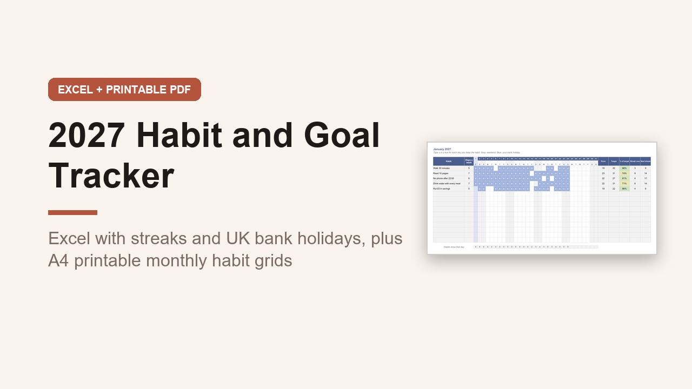

2027 Habit and Goal Tracker, UK Excel Spreadsheet and A4 Printable
GBP 7.00 · instant digital download

Track your habits and goals through 2027 in Excel, with streaks worked out for you, Monday start weeks and UK bank holidays for your nation.
What you get: 2 files.
1.
An editable Excel workbook (.xlsx) with 19 sheets: Start here, Summary, Setup, one sheet for each month January to December, Year at a Glance, Goals, Quarterly Review and Bank Holidays.
Set up to 15 habits and how many days a week you are aiming for.
Type x on each day you do one.
Every month works out days done, the month's target, % of target, current streak and best streak, and streaks carry on from one month to the next.
Summary shows completion by month with a chart, each habit's totals and your top 3 habits by streak.
Year at a Glance colours every habit by month on one A4 page.
Goals holds 8 goals with a milestone for each quarter and a status.
A worked January example is filled in.
2.
A printable A4 landscape PDF, 23 pages, not editable: a habit list page, 2 goal pages, 12 monthly habit grids for 15 habits with weekends shaded and bank holidays marked, 4 quarterly review pages, a year review and notes.
Opens in Excel, Google Sheets and Numbers.
Digital download, nothing is posted..
What happens after you buy
Payment and delivery are handled by Gumroad. You get the download straight after paying, and a copy of the link by email. Nothing is posted to you.
Tags: habit tracker, goal tracker, 2027 planner, excel tracker, habit spreadsheet, goal planner, new year goals, a4 printable, uk planner, streak tracker